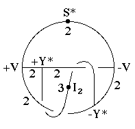
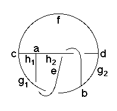

213
213
 215
215 Orbifold Atlas Home Page
Orbifold Atlas Home Page
 Crystallographic Topology Home Page
Crystallographic Topology Home Page
Underlying Topological Space: S3; Figure Pseudo-Symmetry (FPS): 1
Euclidean 3-Orbifold with Invariant-Lattice-Complex Letters
(left), Wyckoff Site Letters (right)
 
| FPS | Mult | Lattice Comp | Group Graph | Wyckoff Set | 2[4]Cover |
| 8-1 | +Y* | 322 | a | ||
| 8-1 | -Y* | 322 | b | ||
| 12-1 | +V | 222 | c | ||
| 12-1 | -V | 222 | d | ||
| 16-1 | +Y*2[I2]-Y*2 | 22<3>22 | (e:a-b)1 | ||
| 24-1 | +V2[S*]-V2 | 22<2>22 | (f:c-d)2 | ||
| 24-1 | -Y*3[-]+V2 | 22<2>22 | (g1:c-b | ||
| 24-1 | -Y*3[-]-V2 | 22<2>22 | g2:b-d)3 | ||
| 24-1 | +Y*3[-]+V2 | 32<2>22 | (h1:c-a | ||
| 24-1 | +Y*3[-]-V2 | 32<2>22 | h2:a-d)4 | ||
| 48 | 1 | i:efgh |
| Struct-Mult | Critical Points | Heegaard Surf | Wyckoff Cut |
| Y*Y*-1 | Y*Y*/VI2V/22/S* | H2222{2211} | f1f2g11g12h21h22 |
Lattice Points: (1) 1/8,1/8,1/8 + (-1/8,-1/8,-1/8) x2; (2) 1/4,1/8,0 + (0,1/4,0) x2; (3) [+V2,-,-,-Y*3,-V2] @ 0,1/4,1/8 + (1/8,1/8,0) x4; (4) [+V2,+Y*3,-,-,-V2] @ 1,1/4,1/8 + (-1/8,1/8,0) x4
213
215
Orbifold Atlas Home Page
Crystallographic Topology Home Page
Page last revised: